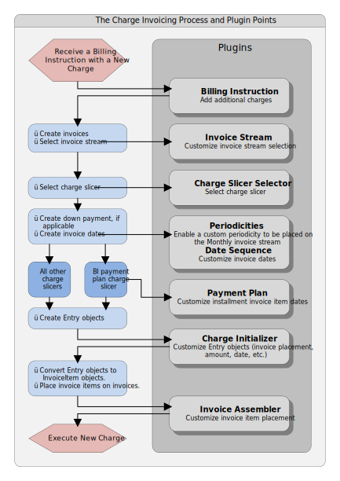

The charge invoicing process for new charges
New charges typically arrive in the form of a billing instruction sent to BillingCenter from an external system. New charges can also be entered manually with the BillingCenter user interface.
During the charge invoicing process, BillingCenter performs several steps, including determining the date of each invoice item and the appropriate invoice to receive the item. The BillingCenter base configuration provides a complete implementation of the charge invoicing process. However, because invoicing requirements vary among insurers, the base configuration process can be configured to meet each insurer’s unique needs.
To enable configuration, BillingCenter invokes configurable plugin modules at various points in the charge invoicing process. Some plugins are empty placeholders intended to perform the special invoicing actions a particular insurer wishes to enact. Other plugins implement the invoicing actions of the base configuration. Through the use of the Gosu programming language, the plugins can be modified or extended to alter the base configuration’s invoicing process.
The diagram shown below illustrates the main operations of the charge invoicing process and the points at which plugins are invoked to enable customization of the process. The graphic includes several references to Entry objects. An Entry object is an invoice item under development. During the charge invoicing process, the initialization and customization of an invoice item is performed upon its Entry object. At the conclusion of the process, each Entry object is ultimately converted to an InvoiceItem object having the same settings as the customized Entry object.

The following table provides a brief description of each plugin and links on where to find additional information about modifying the plugin.
Plugin |
Description |
|---|---|
Billing Instruction |
Enables customization of the charge. Calls the plugin method addAdditionalCharges. See Billing instruction plugin. |
Invoice Stream |
Enables customization
of the selection of an invoice stream. The invoice stream is selected
based on the periodicity defined in the policy period’s payment plan.
Calls the plugin methods |
Charge Slicer Selector |
Selects the method used to divide the charge into invoice items. Calls the plugin method selectChargeSlicer. See Charge slicer selector plugin. |
Periodicities |
Informs BillingCenter
whether a custom periodicity can be placed on the Monthly invoice stream.
Can call the plugin methods |
Date Sequence |
Enables customization of a sequence of invoice dates. The plugin can be extended to process custom periodicities. Calls the plugin method createPeriodicSequenceWith. See Date sequence plugin. |
Payment Plan |
Enables customization of installment invoice item dates. Calls the plugin method createFullSetOfInstallmentDates. See Payment plan plugin. |
Charge Initializer |
Enables customization
of |
Invoice Assembler |
Enables customization of invoice item placement. Calls the plugin method getCustomInvoiceItemPlacements. SeeInvoice assembler plugin. |